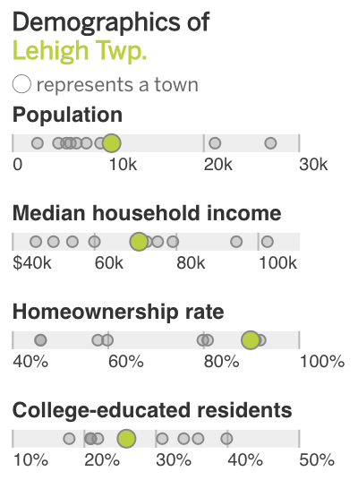
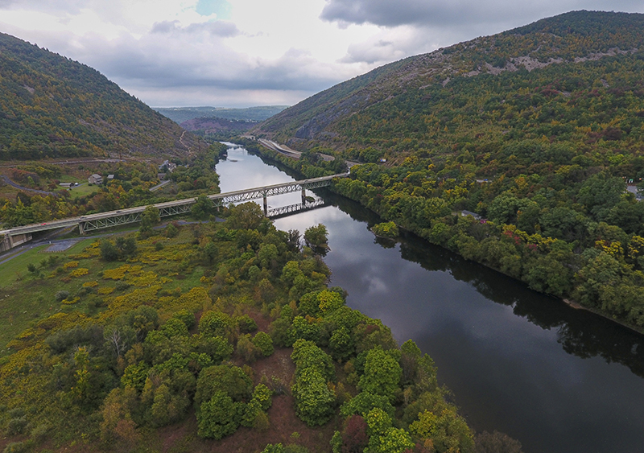

Lehigh Twp.
End of the road
We reach the end of our journey at another river. Here, in the northwestern corner of Northampton County, is the Lehigh Gap, where the Appalachian Trail descends the Blue Mountain ridge to cross the Lehigh River.
Route 248 continues a few more miles northwest to its terminus in Carbon County, another county that has been known to swing between parties, but which overwhelmingly supported Trump in 2016, 65% to 31%.

Find an overlook in the gap, and you can look back across Northampton County – potentially one of the single most important counties in the 2020 presidential election. Where history says the rolling hills vote Republican, the cities go for Democrats, and the boroughs and suburbs make up the balance.
What are the voters here looking for? Everyone we spoke to had similar ideas: Fairness. Equality. A voice. They just see different candidates as the way to achieve them.

Route 248 crosses over the Lehigh River, which cuts through the Blue Mountain ridge on the western border of Northampton County. The break in the ridge is known as Lehigh Gap.
“Everybody’s pointing fingers and, just, separating what used to be really good about America,” Bednarcik, the Lehigh Township retiree, says of the current political climate. “Togetherness, working together. If a job needed to get done, everybody got together and did it.”
“I want the person who's going to be president to do the right thing. That's it,” says Rodriguez, the machinist from Nazareth. “Democrat, Republican, independent – just do the right thing. That's what I want."
“It's going to be really close,” says Bilinski, the Easton teacher from Nazareth. “It's going to be exciting to watch democracy in action and … that's what makes America such an amazing place to live.”
"We gotta do better,” says Warren, the soul food kitchen owner in Easton’s West Ward. “And election time is a time for us to go out and vote and do better. … The voting will tell who is fed up and who is not.